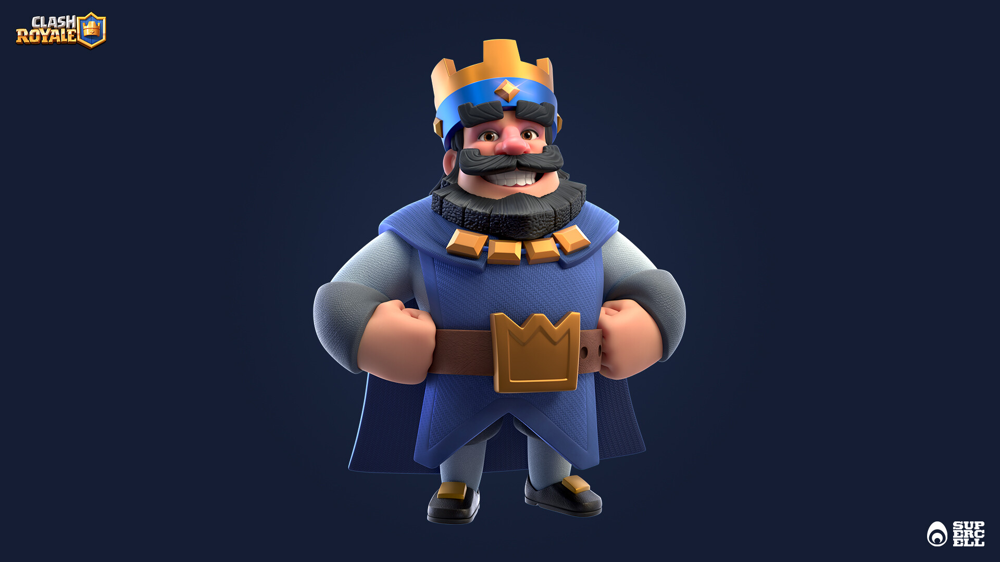
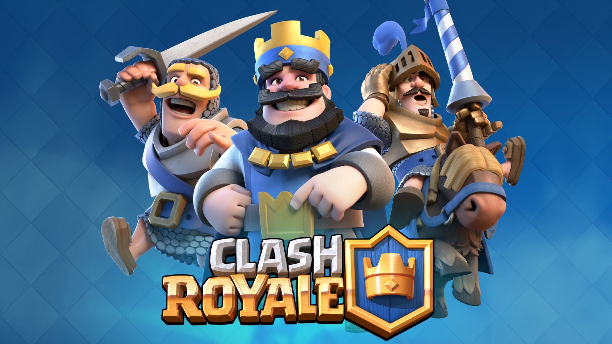
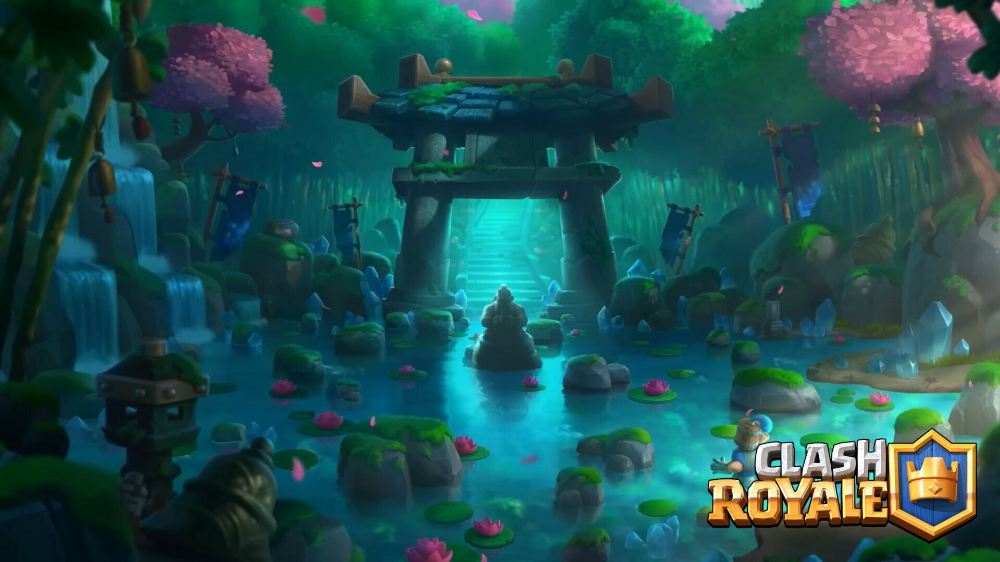

Welkom op onze website!
Wij (Bruce van Rooij en Sky Gilissen) hebben deze site aangemaakt voor onze informatica PO (Praktische Opdracht) Op deze website kom je meer te weten over onze favoriete mobiele videogame Clash Royale. Dit is onze eerste site die wij zelf hebben gemaakt dus er kunnen nog wat foutjes inzitten, aarzel dus niet om ons te contacteren voor eventule opmerkingen/vragen over onze website! wij zijn te bereiken per mail, klik dus rechtsboven op contact om ons te bereiken. Klik op Games om meer te weten te komen over de game Clash Royale, Klik op Supercell om meer te weten te komen over het bedrijf dat Clash Royale heeft opgericht, Klik op Bekende Spelers om meer te weten te komen over de spelers die Clash Royale spelen, en klik tenslotte op E-Sports om meer te weten te komen over het competitief spelen van Clash Royale. Veel plezier op onze website!
  